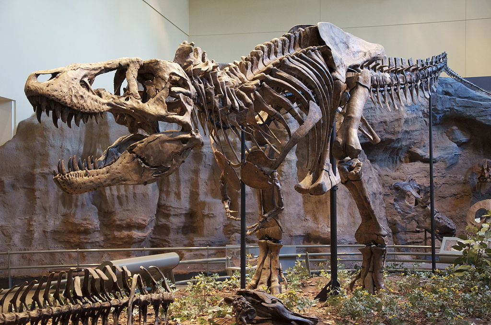

Tyrannosaurus
Like other tyrannosaurids, Tyrannosaurus was a bipedal carnivore with a massive skull balanced by a long, heavy tail. Relative to its large and powerful hind limbs, the forelimbs of Tyrannosaurus were short but unusually powerful for their size, and they had two clawed digits. The most complete specimen measures up to 12.3 meters (40 feet) in length, though T. rex could grow to lengths of over 12.3 m (40 ft), up to 3.96 m (13 ft) tall at the hips, and according to most modern estimates 8.4 metric tons (9.3 short tons) to 14 metric tons (15.4 short tons) in weight. Although other theropods rivaled or exceeded Tyrannosaurus rex in size, it is still among the largest known land predators and is estimated to have exerted the strongest bite force among all terrestrial animals. By far the largest carnivore in its environment, Tyrannosaurus rex was most likely an apex predator, preying upon hadrosaurs, juvenile armored herbivores like ceratopsians and ankylosaurs, and possibly sauropods. Some experts have suggested the dinosaur was primarily a scavenger. The question of whether Tyrannosaurus was an apex predator or a pure scavenger was among the longest debates in paleontology. Most paleontologists today accept that Tyrannosaurus was both an active predator and a scavenger.